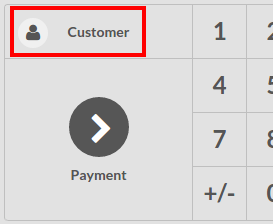
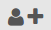
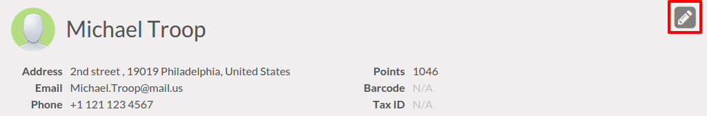
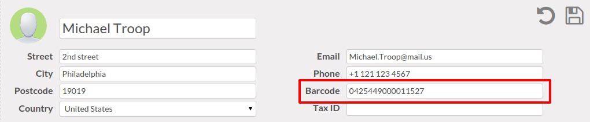

Перейдите в оплату чека
На Инфо-панели, вы можете увидеть ваши Рабочие Места Кассира, нажмите на кнопку Новая смена:

Вы находитесь на главном экране Рабочего Места Кассира :

Справа вы можете увидеть список ваших товаров с категориями над ними. Переключить категорию можно, нажав на нее.
Если Вы нажмете на товар, он будет добавлен в вашу чек. Вы можете самостоятельно установить необходимые Количество/Вес путем ввода их с клавиатуры.
Добавление клиента
Выбрав из списка клиентов
На главном экране, нажмите на Клиент (над Оплата):
Вы должны выбрать клиента, чтобы иметь возможность выставить счет.

Вы можете найти клиента в списке уже записанных или создать нового, нажав на значок.
Примечание
Для получения дополнительной информации о добавлении нового клиента, вы можете прочитать здесь Как добавлять клиентов?.
Используя штрих-код для клиента
На главном экране, нажмите на Клиент (над Оплата):
Выберите клиента и нажмите на иконку карандаша для редактирования его карточки.
Установите штрих-код для этого клиента.
Сохраните изменения и теперь когда вы отсканируете этот штрих-код, данный клиент будет сопоставлен с чеком
Примечание
Будьте осторожны с Настройками штрих-кодов. По умолчанию, штрих-коды клиентов должны начинаться с 042. Для проверки настроек, штрих-кодов по умолчанию, перейдите в .

Оплата и выставление счета
После того, как чек наполнен, нажмите на Оплата. Вы можете выбрать способ оплаты. В этом примере, клиент должен вам 10.84 и платит с помощью VISA.
Перед нажатием на Утвердить, вам нужно нажать на Счет для того, чтобы создать счет для этого заказа.

Ваш счет печатается и вы можете продолжать обрабатывать заказы.
Получение счета для конкретного заказчика
Для получения счета для клиента, перейдите в приложение Продажи, нажмите на .
В карточке клиента, нажмите на кнопку Выставленные Счета :

Вы получите список всех его счетов. Нажмите на счет, чтобы узнать подробности.